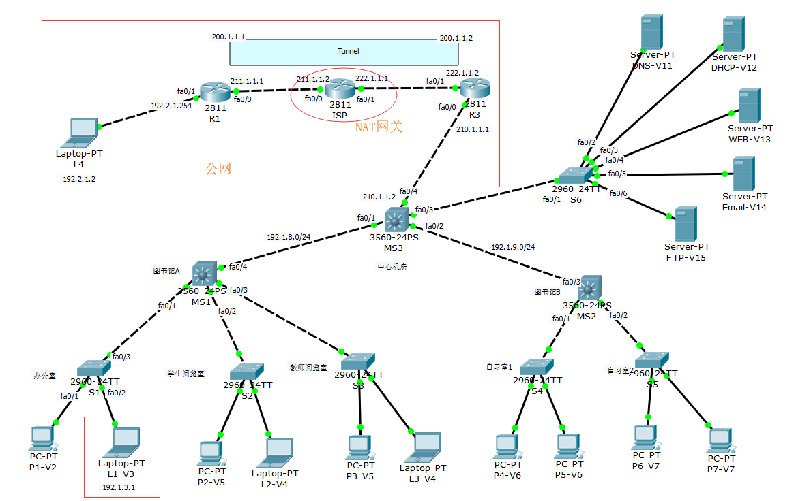
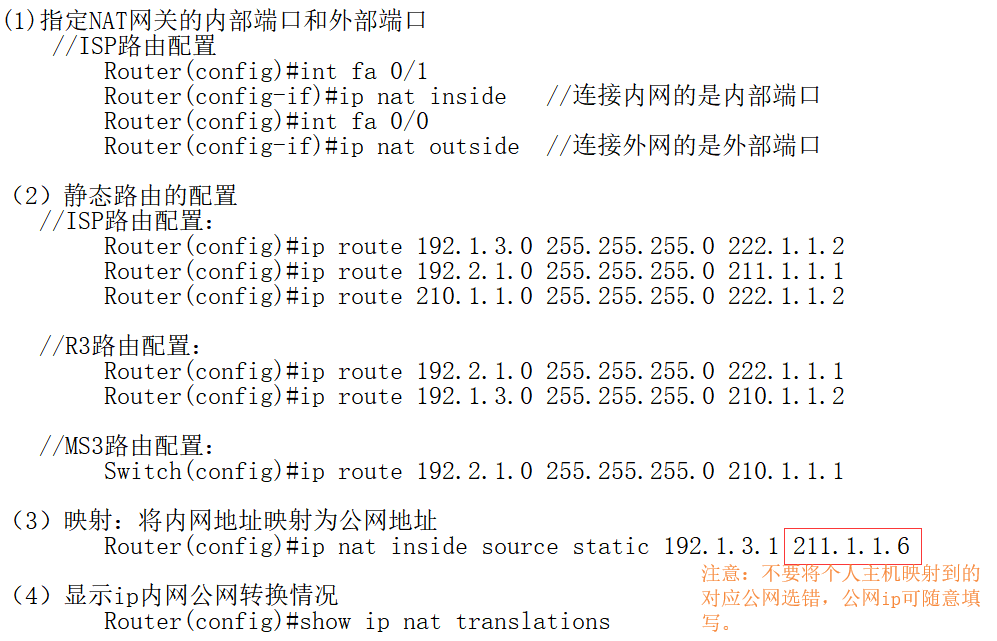
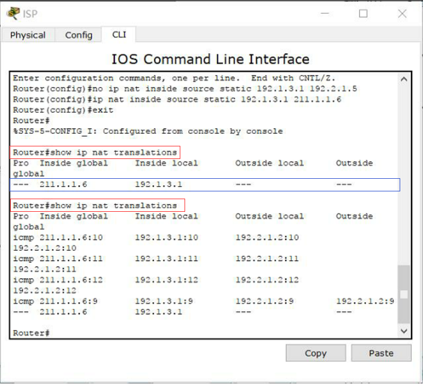
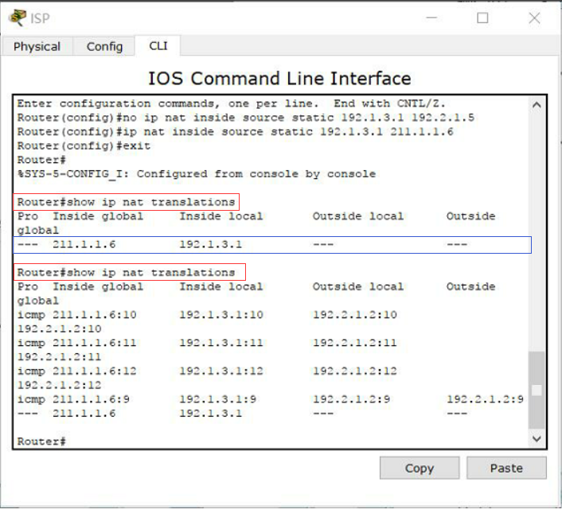
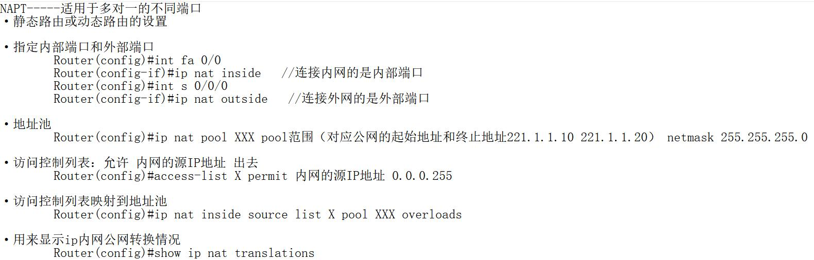

原文出处:本文由博客园博主Hello_world0423提供。
原文连接:https://www.cnblogs.com/zx0423/p/12084795.html
原文连接:https://www.cnblogs.com/zx0423/p/12084795.html
（一）NAT的概念及工作原理
简单来讲，nat就是将私有网址转化为共有网址的技术。NAT通常部署在一个组织的网络出口位置，成为NAT网关。举个栗子，一段报文想离开私网，必须经过NAT网关将数据传输给公网Internet，通过nat实现源IP地址映射为公网IP地址，Internet发现该IP实际是私有IP，就将请求的服务实现，并通过网关回传给源IP。这样一次由私网主机向公网服务端的请求和响应就实现了。
注意：网络访问只能先由私网侧发起，公网是无法主动访问私网主机的。
（二）NAT的分类
1. 静态NAT：一对一模式，即一个内部主机唯一占用一个公网IP，通常用于服务器。
2. 动态NAT：一对一模式，即将未注册的IP地址映射到注册IP地址池的一个地址。
3. NAPT：多对一模式，即将多个私网IP通过不同端口号映射到一个公网IP，主要原理是端口号的唯一性。注意：传输层的端口号都是大于1024的.
（三）NAT的实现

1.静态NAT的实现分为三个步骤（以下代码的实现都是根据上图的ip及端口号）：

验证：L1-V3ping通外网L4
 

解释：通过show ip nat translations命令，可以看出内网主机IP与公网IP的转换。
2.NAPT的实现分为五个步骤：

以上就是本人对于NAT的理解和实现，如有不足，望包涵。
参考资料：
csdn nat技术详解